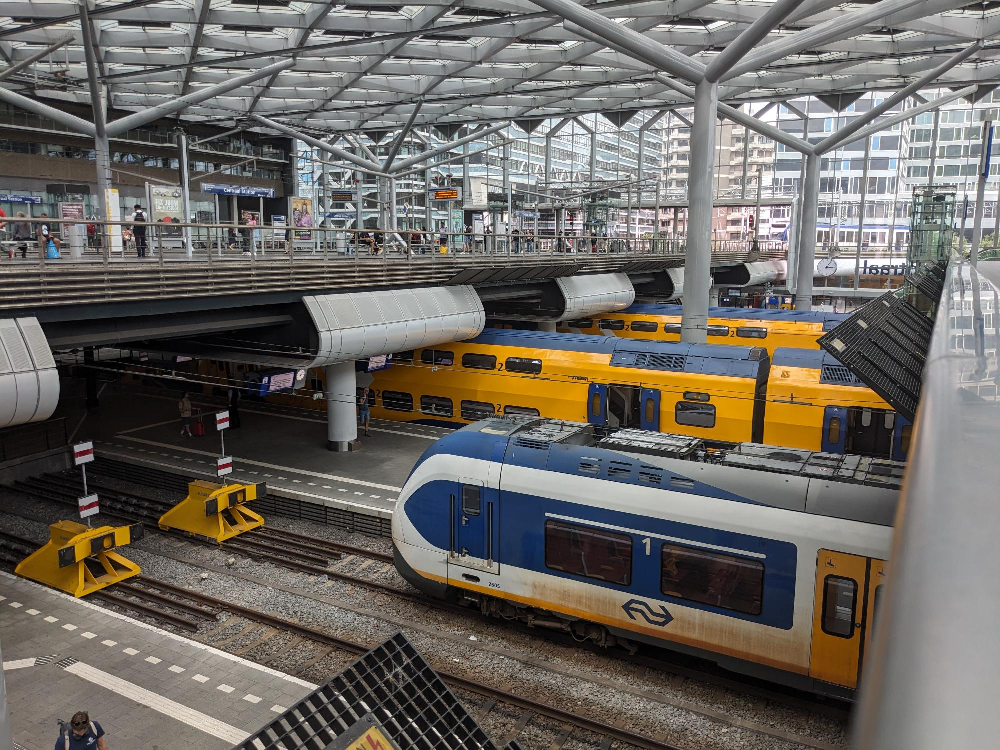

NS Sprinters: Sprinter Light Train
The year is 1992, Sir Mix-a-lot’s Baby got Back is on the pop charts, and the Dutch railway (NS) is dominated by the Mat ‘64 trains, with a fleet of 246 units. These trainsets were introduced in 1961, making them 31 years old by 1992. Also during this time, the original Sprinter, the Stadsgewestelijk Materieel (SGM) is only 17 years old and approaching the middle of its expected lifespan.
The NS started looking for a new train with the latest technology to take over the reins from the Mat ‘64. This is where the Stoptreinmaterieel ‘90 (SM ‘90), a potential candidate, comes into the picture. Nine test sets were ordered by Talbot, equipped with the first three-phase induction motors on the Dutch rail network, expected to extend the lifespan.1 The train, kitted with electronics, proved to be difficult to manage and needed frequent trips to the workshop for repairs. Unfortunately, the teething problems persisted, and in 2003 the wheels started separating from the axle. It was because of this, among all the other problems, the SM ‘90 was retired in the 2005 timetable.
The SLT would be delivered in four and six-part lengths and made use of Jacobs bogies which allowed wide and clear passageways between train cars. By design, the train could travel up to 160 km/h but is limited to 140 km/h on the Dutch rail network. It boasted a modern clean interior, easy navigation within the train to allow passengers to move about, and a passenger information system.
Fast forward three years to 2008, and the first delivery of a four and six-part trainset arrives for its initial test runs. Only a year later it started serving passengers between Utrecht, Gouda, and The Hague. Even though the SLT was built from a tried and tested model, its introduction to the Dutch railway network was not perfect. The train’s computer system would occasionally bring it to a halt requiring a reset, this briefly paused its deployment over the summer months. Both passengers and NS employees also highlighted the lack of a toilet onboard which was omitted because the train was meant for short trips.3 To add to the problems, during the winter of 2010, melted snow caused short circuits bringing a large part of the fleet offline.4
All these problems meant that the Mat ‘64 trains were still in service, unable to be fully replaced, and approaching their 50th birthday. Not only affected the Mat'64 but the retirement plans of the DubbelDeksMaterieel (DDM-1), from the 1980s, which were kept in service longer to cover for the new SLT fleet. It wasn’t all doom and gloom however, the issues were gradually fixed and by 2018 the first toilet was installed on an SLT. In fact, the Ministry of Infrastructure and Water Management mandated that all Sprinter (stop trains) be fitted with a toilet if at least a third of the passengers are expected to travel for more than 30 minutes. This led all Sprinters to include accessible toilets by the start of the 2022 timetable when the modernised SGMs were being phased out.5 This was timed with the modernisation of the rolling stock, equipping them with an upgraded and more accessible interior.6
Today 131 SLT are deployed by the NS 7 to serve passengers on Sprinter routes and to my surprise the occasional Intercity route as well. In the above photo, I captured a six-part SLT, on 27 July 2023, being used on the InterCity 2812 route from Utrecht Centraal to Rotterdam Centraal. In Rotterdam, it then reverses and travels the InterCity 2823 route back to Utrecht Centraal. All-in-all, the SLT is just one rolling stock currently used for Sprinter routes, I will most likely explore the others in the upcoming months as I’ve done for the retired SGM.